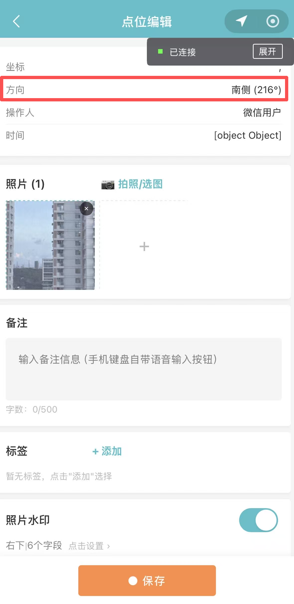
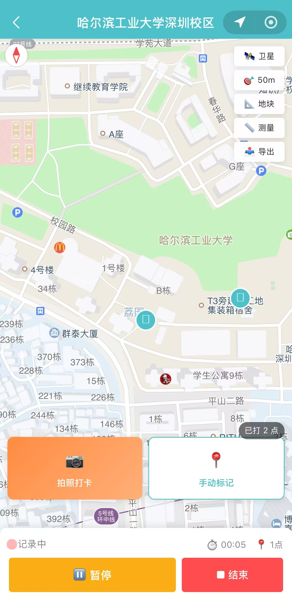
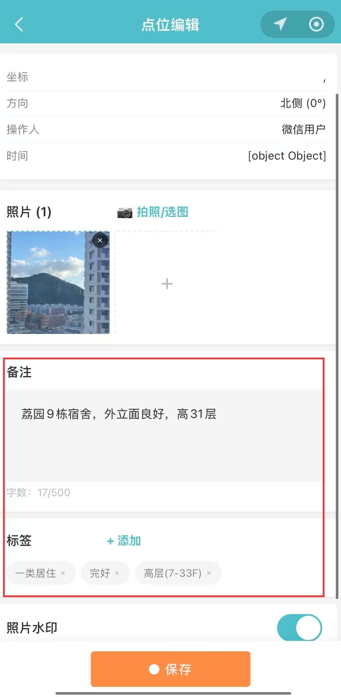
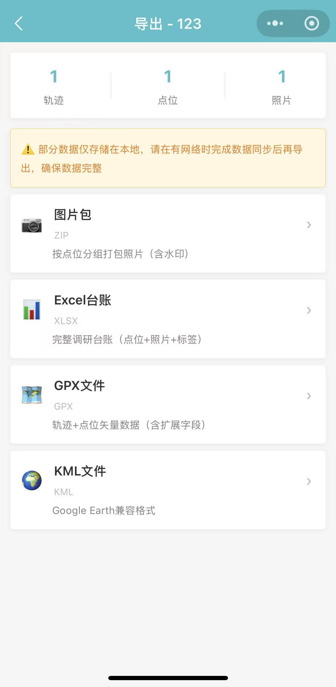
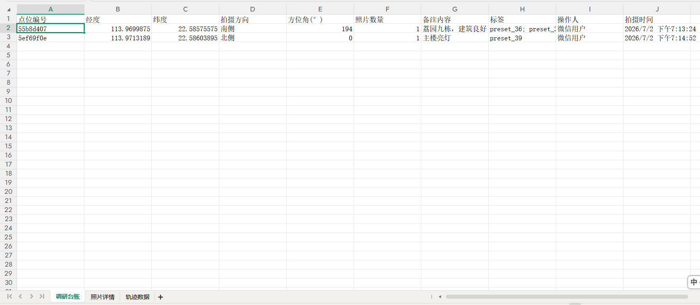
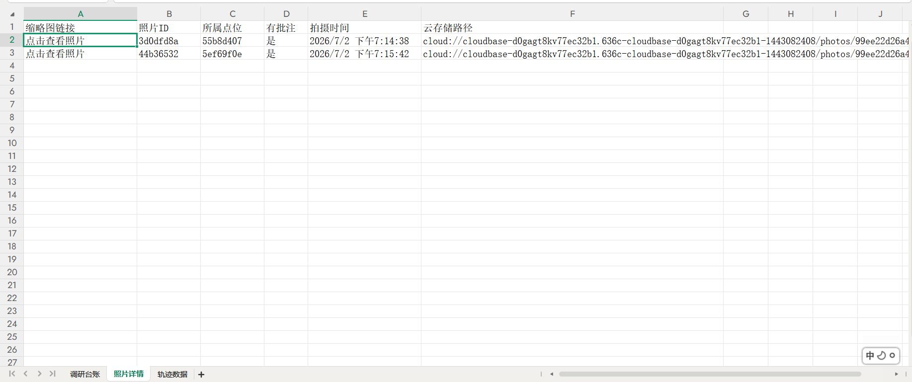
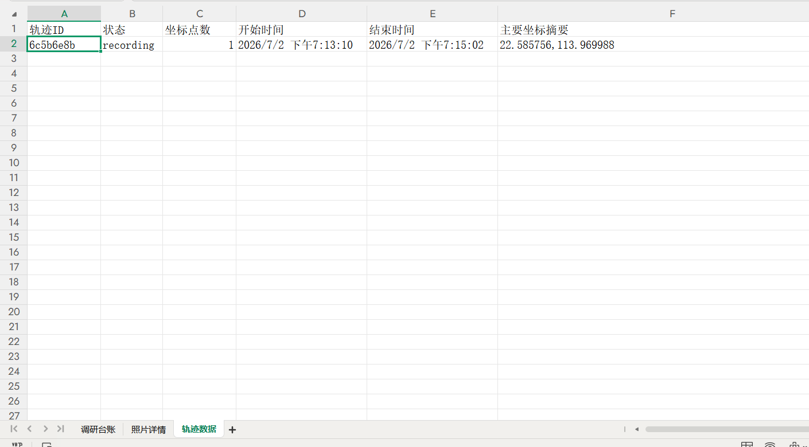

一款面向城乡规划学生的实地调研协作工具（微信小程序）。 将传统调研中拍照、笔记、轨迹记录整合为结构化数字流程， 支持带方向标记的拍照、图文录入以及一键多格式导出。
传统实地调研需要在多个 App 之间反复切换——数据碎片化、照片缺乏方向信息、 回校后需要 2-3 小时手工整理。这不是某个人的问题，是整个教学流程的痛点。
拍照用相机、记笔记用备忘录、打点用地图 App、最后还要手动匹配——不同工具产出的数据格式互不兼容，整理全靠人工。
拍了一张街景照，回来不记得是朝哪个方向拍的。规划专业需要知道"这栋楼在路口西北角"——普通相机记录不了这些。
照片在手机里、笔记在微信里、轨迹在另一个 App 里。团队协作时各自的数据格式都不统一，合并成本极高。
调研结束后手动建 Excel 台账、手动匹配照片与点位、手动描轨迹。半天调研，两天整理——大量时间花在机械劳动上。
深度拆解 2 款主流户外记录 App，从三个核心维度横向对比，找到一个被忽视的需求缺口。
🔑 关键发现：两步路和六只脚的核心定位都是"户外运动轨迹记录"——它们的用户是徒步/骑行爱好者，关心的是海拔、配速、里程。但对于规划专业调研而言，真正需要的是方向标记、结构化录入、专业格式导出——这三个维度上，现有产品几乎是空白。这就是 SiteWalk 的切入点：不是做"更好的轨迹记录器"，而是做"调研信息结构化工具"。
明确"不是什么"比"是什么"更重要。SiteWalk 不是运动轨迹记录器，而是为规划专业调研量身定制的数据采集与导出系统。
城乡规划、建筑学、风景园林专业的在校学生与教师——需要进行实地踏勘、收集现场数据、输出调研报告的人群。
调研信息结构化——将拍照（含方向）、笔记、标签、GPS 轨迹整合为统一的数据流，一键导出为可交付的专业格式（Excel/GPX/KML/照片包）。
不做运动记录（不关心配速/海拔/卡路里）、不做社交分享（没有动态/点赞/排行榜）、不做通用笔记（不做 Markdown/富文本）——专注调研这一个场景。
方向感知拍照（罗盘+陀螺仪）→ 结构化标签体系（3 级预设+自定义）→ 专业格式导出（含完整元数据的 Excel/GPX/KML）——三个环节形成闭环。
📍 产品定位宣言：传统的"调研 → 整理 → 出报告"流程中，整理环节是最大的时间黑洞。SiteWalk 的价值不是增加一个新功能，而是让整理环节消失——因为你在调研过程中录入的每一条数据，从一开始就是结构化的。
调研常在网络不稳定的户外进行——"没网就不能用"是不可接受的。架构设计从第一天就以离线优先为核心原则。
每个功能模块都围绕"调研信息结构化"这一核心目标设计——采集、录入、导出形成完整链路。 下方为 4 个核心功能模块的小程序截图，以及最终的导出成果展示。
调用手机罗盘 API 获取拍摄时的地理方位角，陀螺仪获取俯仰角。照片通过 Canvas 自动叠加方向箭头水印（箭头始终指向正北），支持"朝北拍摄""面向东北"等自然语言方向标注。拍照即完成定位和方向记录，无需事后手动标注。


基于微信原生<map> 组件，支持实时 GPS 轨迹录制（打点间隔可调 1-30s）、打卡点标记（长按地图或点击标记，关联标签与备注）、轨迹回放与颜色自定义。录制中可随时暂停/继续，多项目之间切换不丢失录制状态。
5 大类 3 级预设标签体系（用地/建筑/交通/环境/问题），支持自定义标签扩展。每个调研点位关联：标签分类 + 文字备注 + 语音录入（自动转文字）+ 现场照片。数据以点位为单位结构化存储，彻底告别"照片一堆、笔记散落各处"的碎片化状态。


云端函数处理导出，支持 4 种产出格式：① 照片包（含方向水印，按点位命名）② Excel 台账（3 个 Sheet：点位汇总 / 标签明细 / 轨迹坐标）③ GPX 轨迹文件（含 <wpt> waypoint，兼容 QGIS/ArcGIS）④ KML 图层文件（直接加载到 ArcGIS/CAD）。所有文件包含完整调研元数据，可作为课程报告附件直接提交。
一趟调研完成后，一键导出以下 4 类成果文件。所有文件包含完整调研元数据，可直接作为课程报告附件提交。



SiteWalk 全程使用 Claude Code 开发。作为独立开发者，我沉淀了一套"双文档驱动"的 AI 协作方法论——让 AI 在长周期多会话开发中保持设计一致性和代码质量。
包含项目概述、技术栈、命名规范、文件结构、关键约束。每次新会话自动加载——确保 Claude 在多周开发中理解项目全貌，不会"只见树木不见森林"。
将配色、圆角、间距、字体、阴影、动效参数全部编码为可读文本。让 AI 写出的 UI 代码天然符合设计规范，大幅减少"样式漂移"和来回修改。
将"做一个导出功能"拆解为：输入格式 → 输出格式 → 约束条件 → 边界情况 → 错误处理。每个模块独立拆分，避免单次 Prompt 信息过载导致输出质量下降。
Claude Code（主开发工具）· 微信开发者工具（预览/调试/真机测试）· Git（版本管理）。最终交付：8 页面 + 6 组件 + 6 工具模块 + 3 云函数 + 5 份完整文档。